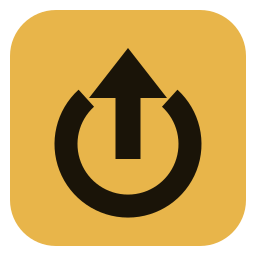

Atualizações no GitHub
Pronto
Catálogo
Qual repositório do GitHub corresponde a cada mod. Links encontrados fora do modDesc.xml ficam aqui como sugestão, porque podem ser de outro projeto.

MODUPDATESIMULAÇÃOADMQual repositório do GitHub corresponde a cada mod. Links encontrados fora do modDesc.xml ficam aqui como sugestão, porque podem ser de outro projeto.